Historic · Upper Dicker
Michelham Priory
A historic priory run by Sussex Past, with an Elizabethan Great Barn for up to 130, a Tudor house, and ceremonies indoors or in the orchard and…
- Up to 175 guests
- Ceremony licence
- Exclusive use
4 venues · checked 11 October 2026
Historic venues come with rules as well as atmosphere: approved caterers, fixed finish times and spaces shared with day visitors. We set those out next to the ceremony rooms and capacities.

Historic · Upper Dicker
A historic priory run by Sussex Past, with an Elizabethan Great Barn for up to 130, a Tudor house, and ceremonies indoors or in the orchard and…

Historic · Hailsham
A castle near Hailsham with ceremony rooms for 30 to 180, outdoor ceremonies in the Cloisters, a bridal suite in the castle and rooms for guests at…

Historic · Amberley
A 900-year-old castle near Arundel, now a hotel, where couples marry against ancient stone with rolling hills beyond and dance into the evening…

Historic · Wadhurst
A castle in the Sussex countryside with ceremonies in the Drawing Room, the Winter Garden or a pavilion in the walled garden, and views from the…
Capacity, licence, catering and rooms for every venue on this page, side by side.
| Venue | Guests | Ceremony licence | Food and drink | Rooms |
|---|---|---|---|---|
| Michelham PrioryUpper Dicker | 130 seated and 175 standing in the Great Barn; 60 in the Priory Chamber | Yes | Approved caterers; your own drinks during the day with no corkage, then the in-house bar | None on site; the venue suggests nearby hotels |
| Herstmonceux CastleHailsham | Up to 180 in the Castle Ballroom | Not stated | Ask the venue | A bridal suite in the castle, and rooms at Bader Hall nearby with 10% off for wedding guests |
| Amberley CastleAmberley | Not stated on the weddings page | Not stated | Champagne and canapés, a three-course wedding breakfast with fine wines and an evening buffet; who caters is not stated | A Premier Deluxe room for the couple; the number of rooms for guests is not stated |
| Wadhurst CastleWadhurst | Wedding breakfast for 100 in the castle or 150 with a marquee; drinks for 120 in the castle | Not stated | Not stated | Not stated |
Michelham Priory say they are licensed for civil ceremonies. The others don't state a licence on their websites, so ask before you book.
Herstmonceux Castle and Amberley Castle have somewhere for you or your guests to stay.
These venues use in-house or approved caterers, or don't say on their websites.
We checked every venue's own website on 11 October 2026, and each venue page links to the source we used.